Clicking the 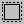 icon in the toolbar, will expand/shrink the graph to fit the visualization window.
The button 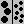 toggles node size; clicking it once removes labels and shows the visualization as a set of points. Clicking it a second time undoes these changes
If a node has an image, click the button to display the node with both its image and label.
Note: this button will only be available when there is a node containing image somewhere in the network.
Node Shape By NodeType/Attribute
By clicking the 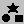 icon in the toolbar, a node can be displayed by a different kind of shape. Each shape represents one nodeType or one attribute.
Resize Node By NodeType/Attribute
A node attribute's value can be captured by the size of the node. Currently, the radius of the circle represents the value of an attribute, while the height and width of the rectangle represent an attribute separately. By clicking the 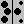 icon in the toolbar, a dialog box will be dispalyed.
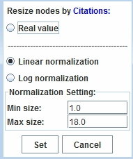
From the above dialog box, you can set the range of the radius based on a real value, a linear nomalized value, or a log nomalized value.
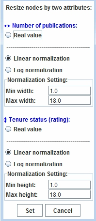
From the above dialog box, you can set the range of height and the range of width for rectangles based on a real value, a linear nomalized value, or a log nomalized value.
The button 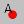 toggles labels for nodes; clicking it once shows labels and clicking it a second time undoes these changes. By default, you can show/hide all nodes in the network. If you want to display the label(s) for only some of the nodes, please select your desired node(s) first, then click this button.
See Node Selection and Deselection to learn how to select your desired node(s).
Press ctrl and select two nodes in the network. Then select the option 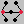 to show all nodes connected to those two nodes at the specified depth.
Clicking on 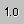 will toggle numbers corresponding to the edge strength on top of all edges. Clicking it once shows the strength number and clicking it a second time undoes these changes. Binary relations will always have a strength of 1.0
Note: This button will only be available when you open a saved network!
The weight of a relation can be shown by the thickness of the edge. By clicking the 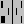 icon in the toolbar, a dialog box will be dispalyed.
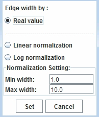
From the above dialog box, you can set the range of the thickness for edges based on a real value, a linear nomalized value, or a log nomalized value.
To obtain technical support, please send email to: ciknow@northwestern.edu